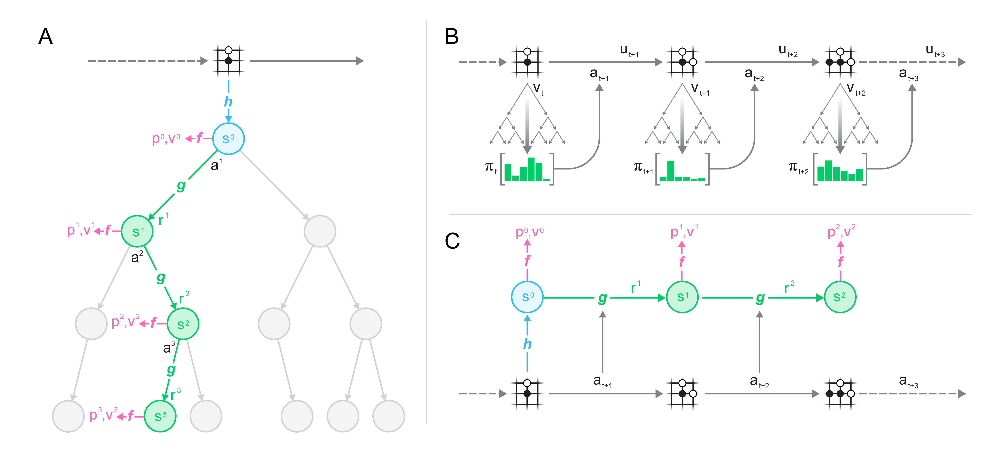
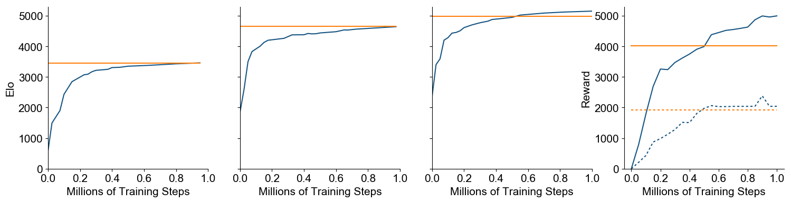
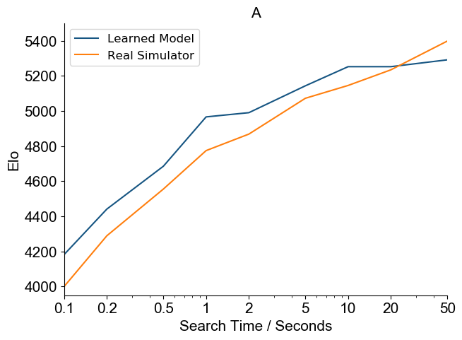
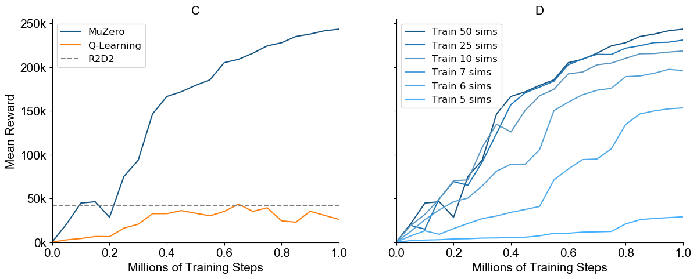

Mastering Atari, Go, Chess and Shogi by Planning with a Learned Model
原论文摘要 · English Abstract
Constructing agents with planning capabilities has long been one of the main challenges in the pursuit of artificial intelligence. Tree-based planning methods have enjoyed huge success in challenging domains, such as chess and Go, where a perfect simulator is available. However, in real-world problems the dynamics governing the environment are often complex and unknown. In this work we present the MuZero algorithm which, by combining a tree-based search with a learned model, achieves superhuman performance in a range of challenging and visually complex domains, without any knowledge of their underlying dynamics. MuZero learns a model that, when applied iteratively, predicts the quantities most directly relevant to planning: the reward, the action-selection policy, and the value function. When evaluated on 57 different Atari games - the canonical video game environment for testing AI techniques, in which model-based planning approaches have historically struggled - our new algorithm achieved a new state of the art. When evaluated on Go, chess and shogi, without any knowledge of the game rules, MuZero matched the superhuman performance of the AlphaZero algorithm that was supplied with the game rules.
表示函数编码观测
历史观测变成根隐状态
动力学函数隐空间前瞻
假设动作推出奖励与下一隐状态
预测函数读出策略价值
从隐状态读出策略与价值
MCTS 搜索改进策略
按访问次数采样真实动作
沿真实轨迹训练三项目标
奖励、策略、价值对齐目标
问题与动机
在 MuZero 之前，规划与学习之间横着一道鸿沟。一边是树搜索规划：只要给定完美模拟器，它在围棋、国际象棋上早已击败人类冠军，但它对真实世界无能为力，因为现实没有规则表，也没有可以任意调用的模拟器。另一边是无模型强化学习：它直接从交互中估计策略与价值，在视觉复杂的 Atari 上很强，却在需要精确、深远前瞻的棋类任务上远逊于规划方法。模型强化学习本应 bridging 这两者——先学环境动力学，再在学到的模型上规划——但此前的模型大多把算力花在重构真实状态或逐像素预测下一帧观测上，在 Atari 这类视觉丰富的环境里始终追不上调优良好的无模型方法。
MuZero 的提问方式换了一个角度：规划到底需要模型预测什么？论文的回答是，只有三样东西真正进入搜索的决策——走一步能得多少分、每个候选动作有多值得选、走下去的局面有多好。也就是即时奖励、策略与价值。至于棋盘或游戏画面长什么样、隐状态对应真实世界的哪个物理量，对规划而言都是无关信息。既然如此，就不要强迫模型去重构观测，也不要强迫隐状态去匹配任何真实状态；让隐状态自由地成为“最有利于预测奖励、策略与价值”的内部表示，模型只需在这些目标上被端到端地训练。
这个动机同时解释了 MuZero 的野心与它的克制。野心在于，它要一个算法同时覆盖两类此前互不相通的基准：单智能体、有中间奖励、折扣、任意奖励尺度的 Atari，以及双人零和、终局才有胜负的棋类；克制在于，它没有发明全新的搜索算法，而是把 AlphaZero 久经考验的蒙特卡洛树搜索与基于搜索的策略迭代搬过来，只把其中“完美模拟器”这一环替换成学到的隐模型。
- 规划的瓶颈不是搜索本身，而是缺少可用的环境动力学模型。
- 此前模型把算力花在重构观测或预测像素上，在 Atari 上始终落后于无模型方法。
- MuZero 只要求模型预测奖励、策略、价值这三个规划直接需要的量。
- 同一算法要同时覆盖 Atari 与围棋、国际象棋、将棋四类环境。
核心思想
MuZero 的核心思想可以浓缩为一句话：学一个价值等价的隐模型，而不是学一个世界的复制品。价值等价的意思是，只要从同一个真实状态出发，在抽象模型里走一条动作序列所累积的奖励，与在真实环境里走同一条序列所累积的奖励一致，那么在这个抽象模型里做规划，就等价于在真实环境里做规划。模型内部的状态不需要是真实状态，转移也不需要是真实转移；它只需要保真“规划所依赖的那些量”。这正是 Predictron、TreeQN 与价值预测网络一脉的思想，MuZero 把它与 AlphaZero 级别的搜索结合，并第一次在 Atari 与棋类上同时做到了最优水平。
实现这一思想的关键，是把模型拆成三个可联合训练的函数。表示函数把历史观测编码为根隐状态，动力学函数给定上一隐状态与一个假设动作，推出即时奖励与下一个隐状态，预测函数则从任意隐状态读出策略与价值。三个函数共享同一套参数 $\theta$，整体记为模型 $\mu_{\theta}$。搜索时，算法不再调用真实环境，而是反复调用动力学函数，在隐状态空间里展开一棵树；训练时，模型在真实轨迹上展开 $K$ 步，每一步的奖励、策略、价值预测都要与真实观测到的奖励、搜索改进后的策略、以及 $n$ 步回报目标对齐。
这样一来，学习信号的来源发生了根本变化：策略目标不再是环境直接给的，而是搜索算出来的更优策略；价值目标不再是蒙特卡洛回报的简单拟合，而是搜索值与 $n$ 步自举的结合。模型因此不只是被动地拟合数据，而是在“搜索—学习—再搜索”的策略迭代循环里不断被推向更好的规划者。论文的直觉表述很形象：智能体可以在内部发明一套最有利于准确规划的规则与动力学，而不必复述真实世界的规则。
- 价值等价：抽象模型只要在累积奖励上与真实环境一致，规划即等价。
- 隐状态没有任何真实语义，只服务于奖励、策略、价值的预测。
- 策略与价值目标由搜索改进而来，形成搜索与学习的策略迭代循环。
- 模型是 AlphaZero 搜索的替代品：把完美模拟器换成学到的隐动力学。

模型结构与关键机制
模型的三个部件各有明确分工。表示函数把历史观测编码为根隐状态，记为 $s^{0} = h_{\theta}(o_{1}, \dots, o_{t})$，其中 $o_{1}, \dots, o_{t}$ 是到当前时刻为止的观测历史，$h_{\theta}$ 是表示函数，$s^{0}$ 是搜索树的根节点对应的隐状态。棋类输入的是最近若干棋盘状态，Atari 输入的是最近 32 帧 $96 \times 96$ 的 RGB 画面与导致这些画面的最近 32 个动作——补上动作历史是因为在 Atari 里动作未必在画面上留下可见痕迹。表示函数与动力学函数使用与 AlphaZero 相同的卷积与残差结构，但只用 16 个残差块而非 20 个，每个卷积用 $3 \times 3$ 卷积核与 256 个隐平面；Atari 的表示函数先用步长为 2 的卷积与池化把 $96 \times 96$ 的画面逐步下采样到 $6 \times 6$ 的隐状态分辨率。
动力学函数是整个模型的引擎，记为 $r^{k}, s^{k} = g_{\theta}(s^{k-1}, a^{k})$，其中 $s^{k-1}$ 是上一步的隐状态，$a^{k}$ 是假设的第 $k$ 步动作，$g_{\theta}$ 是动力学函数，输出即时奖励 $r^{k}$ 与新隐状态 $s^{k}$。这里的 $r^{k}$ 是模型预测的“走这一步能得多少分”，$s^{k}$ 则完全是内部量：它不对应棋盘、不对应游戏画面，只是一个被训练出来、能让后续预测更准的向量。动力学函数是确定性的，随机转移的扩展被明确留作未来工作。动作以空间平面形式拼接到隐状态上输入动力学函数，棋类按棋盘位置编码，将棋用 11 个平面、国际象棋用 8 个平面编码走子与升变，Atari 则把独热动作向量平铺成平面。
预测函数从任意隐状态读出策略与价值，记为 $\mathbf{p}^{k}, v^{k} = f_{\theta}(s^{k})$，其中 $f_{\theta}$ 是预测函数，$\mathbf{p}^{k}$ 是第 $k$ 步的策略分布，$v^{k}$ 是第 $k$ 步的价值估计。它沿用 AlphaZero 的联合策略价值网络结构。三个函数合起来，模型在时刻 $t$ 的预测目标可写为：策略 $\mathbf{p}_{t}^{k} \approx \pi(a_{t+k+1} \mid o_{1}, \dots, o_{t}, a_{t+1}, \dots, a_{t+k})$，价值 $v_{t}^{k} \approx \mathbb{E}[u_{t+k+1} + \gamma u_{t+k+2} + \dots \mid o_{1}, \dots, o_{t}, a_{t+1}, \dots, a_{t+k}]$，奖励 $r_{t}^{k} \approx u_{t+k}$，其中 $\pi$ 是用于选择真实动作的策略，$u$ 是真实观测奖励，$\gamma$ 是环境的折扣因子。注意价值定义里用的是折扣回报的期望，$\gamma$ 越小，远期奖励在价值里占比越低。
两个数值处理细节决定了这个结构能在 Atari 这种奖励尺度悬殊的环境里稳定训练。第一，价值与奖励目标先经过可逆变换 $h(x) = \mathrm{sign}(x)(\sqrt{|x|+1} - 1 + \epsilon x)$ 压缩尺度，其中 $x$ 是原始标量目标，$\epsilon = 0.001$，再把变换后的标量离散化为 601 个支撑点上的分类分布（支撑点为 $-300$ 到 $300$ 的每个整数），每个标量表示为相邻两个支撑点的线性组合，例如目标 $3.7$ 表示为支撑点 $3$ 上权重 $0.3$、支撑点 $4$ 上权重 $0.7$；网络输出 601 维 softmax，推理时先取期望再逆变换还原。第二，隐状态会被缩放到与动作输入相同的 $[0, 1]$ 区间，即 $s_{\mathrm{scaled}} = \frac{s - \min(s)}{\max(s) - \min(s)}$，其中 $\min(s)$ 与 $\max(s)$ 是该隐状态向量内的最小值与最大值，用来约束激活幅度、稳定学习。
- 表示函数：$s^{0} = h_{\theta}(o_{1}, \dots, o_{t})$，把观测历史编码为根隐状态。
- 动力学函数：$r^{k}, s^{k} = g_{\theta}(s^{k-1}, a^{k})$，确定性地推出奖励与下一隐状态。
- 预测函数：$\mathbf{p}^{k}, v^{k} = f_{\theta}(s^{k})$，从隐状态读出策略与价值。
- Atari 的价值与奖励经可逆压缩变换后离散为 601 个支撑点上的分类分布。
- 隐状态缩放到 $[0, 1]$ 区间，约束激活幅度。
训练与推理流程
推理时，MuZero 在每个真实时间步 $t$ 都做一次蒙特卡洛树搜索。搜索从根隐状态 $s^{0}$ 出发，每次模拟分选择、扩展、回溯三段。选择阶段沿着树向下走，每一步按 pUCT 上置信界选动作：
$$a^{k} = \arg\max_{a} \left[ Q(s, a) + P(s, a) \cdot \frac{\sqrt{\sum_{b} N(s, b)}}{1 + N(s, a)} \left( c_{1} + \log\left(\frac{\sum_{b} N(s, b) + c_{2} + 1}{c_{2}}\right) \right) \right]$$
其中 $a^{k}$ 是第 $k$ 步选出的动作，$Q(s, a)$ 是边 $(s, a)$ 的平均价值，$P(s, a)$ 是先验策略概率，$N(s, a)$ 是该边的访问次数，$\sum_{b} N(s, b)$ 是父节点所有边的总访问次数，$c_{1} = 1.25$ 与 $c_{2} = 19652$ 是控制先验相对价值影响的常数。方括号里第一项鼓励利用高价值动作，第二项是探索奖励：访问越少的动作、先验概率越高的动作，探索奖励越大。走到叶节点时调用一次动力学函数与预测函数做扩展，把新节点加入树；每次模拟最多只调用一次动力学函数与一次预测函数，因此单次搜索的计算量与 AlphaZero 同阶。
回溯阶段要处理 MuZero 相对 AlphaZero 的两个推广：中间奖励与无界价值。沿模拟路径自举出 $l-k$ 步的折扣累积奖励估计：
$$G^{k} = \sum_{\tau=0}^{l-1-k} \gamma^{\tau} r_{k+1+\tau} + \gamma^{l-k} v^{l}$$
其中 $G^{k}$ 是从第 $k$ 步出发的回报估计，$r_{k+1+\tau}$ 是路径上的模型预测奖励，$v^{l}$ 是叶节点的价值估计，$\gamma$ 是折扣因子，$l$ 是本次模拟到达的叶节点深度；然后用 $G^{k}$ 更新路径上每条边的 $Q$ 值（增量平均）与访问次数 $N$。由于 Atari 的价值无界、无法直接与概率相加进 pUCT 公式，MuZero 把 $Q$ 值按搜索树内已观测到的最小最大值归一化到 $[0, 1]$ 区间：
$$\bar{Q}(s^{k-1}, a^{k}) = \frac{Q(s^{k-1}, a^{k}) - \min_{s, a \in Tree} Q(s, a)}{\max_{s, a \in Tree} Q(s, a) - \min_{s, a \in Tree} Q(s, a)}$$
其中 $\bar{Q}$ 是归一化后的 $Q$ 值，分子分母里的最小值与最大值取遍整棵搜索树内所有边的 $Q$ 值；这个技巧避免了为每个游戏单独设定价值尺度，是 MuZero 能做到“一个算法、不改超参、通吃 57 个游戏”的关键设计之一。搜索结束后，真实动作按根节点访问次数的分布采样，即 $a_{t+1} \sim \pi_{t}$，其中 $\pi_{t}$ 是与访问次数成正比的搜索策略；环境返回新观测 $o_{t+1}$ 与奖励 $u_{t+1}$，轨迹存入回放池。
训练时，从回放池采样一条轨迹，用表示函数编码观测历史，再沿真实动作序列把模型展开 $K = 5$ 步，每一步的三个预测都要对上各自的目标：策略对上搜索策略 $\pi_{t+k}$，价值对上 $n$ 步回报目标 $z_{t+k}$，奖励对上真实观测奖励 $u_{t+k}$。价值目标用 $n$ 步自举构造：
$$z_{t} = u_{t+1} + \gamma u_{t+2} + \dots + \gamma^{n-1} u_{t+n} + \gamma^{n} \nu_{t+n}$$
其中 $z_{t}$ 是时刻 $t$ 的价值目标，$u_{t+1}, \dots, u_{t+n}$ 是真实观测到的未来 $n$ 步奖励，$\nu_{t+n}$ 是 $n$ 步之后那个时刻的搜索价值估计，$\gamma$ 是折扣因子；棋类没有中间奖励，直接自举到终局，Atari 取 $n = 10$，折扣 $\gamma = 0.997$。总损失是三项损失之和再加 L2 正则：
$$l_{t}(\theta) = \sum_{k=0}^{K} l^{r}(u_{t+k}, r_{t}^{k}) + l^{v}(z_{t+k}, v_{t}^{k}) + l^{p}(\pi_{t+k}, \mathbf{p}_{t}^{k}) + c\|\theta\|^{2}$$
其中 $l_{t}(\theta)$ 是时刻 $t$ 的总损失，$l^{r}$、$l^{v}$、$l^{p}$ 分别是奖励、价值、策略的损失函数，$r_{t}^{k}$、$v_{t}^{k}$、$\mathbf{p}_{t}^{k}$ 是模型在展开第 $k$ 步的预测，$c\|\theta\|^{2}$ 是参数 $\theta$ 的 L2 正则项。棋类奖励与价值用平方误差损失，Atari 因奖励与价值尺度多变改用交叉熵损失，策略损失两种环境都用交叉熵；棋类没有中间奖励时省略奖励损失。为保持各展开步的梯度量级相近，每个头的损失除以 $K$，动力学函数入口处的梯度再乘以 $\frac{1}{2}$。训练跑 100 万个小批量，棋类批量 2048、Atari 批量 1024；搜索时棋类每步 800 次模拟、Atari 每步 50 次模拟。Atari 的采样用优先回放，优先级正比于搜索价值与 $n$ 步回报目标之差的绝对值 $p_{i} = |\nu_{i} - z_{i}|$，并用重要性采样权重纠偏，棋类则均匀采样。
- 每步做一次 MCTS：选择用 pUCT 公式，扩展调用一次动力学与预测函数，回溯更新 $Q$ 与 $N$。
- 价值无界问题用树内最小最大归一化 $\bar{Q} \in [0, 1]$ 解决，不引入游戏先验。
- 真实动作按根节点访问次数采样，$a_{t+1} \sim \pi_{t}$。
- 训练把模型沿真实动作展开 $K = 5$ 步，三项目标分别对齐真实奖励、搜索策略与 $n$ 步回报。
- 棋类每步 800 次模拟、Atari 每步 50 次模拟；Atari 折扣 $\gamma = 0.997$、自举 $n = 10$ 步。
实验与结果
论文在四个基准上评估 MuZero：围棋、国际象棋、将棋与全部 57 个 Atari 游戏。训练曲线显示，在围棋上 MuZero 略微超过了 AlphaZero，尽管每个搜索节点用的计算更少（MuZero 每次评估 16 个残差块，AlphaZero 是 20 个），论文推测这是因为 MuZero 在搜索树里缓存了计算，每多调用一次动力学模型就加深一层对局面的理解。在 Atari 上，MuZero 的人类归一化分数中位数与均值都创下新纪录：中位数 2041.1%、均值 4999.2%，超过此前最强的无模型方法 R2D2（中位数 1920.6%、均值 4024.9%），在 57 个游戏里赢了其中 42 个，并且在所有游戏上都超过此前最好的模型方法 SimPLe。注意这两个数字的口径：中位数看的是“典型游戏”的水平，均值则会被个别分数极高的游戏拉高，两者同时领先才说明优势是全面的而非个别游戏刷出来的。
样本效率的对比更能说明问题。论文还评估了一个变体 MuZero Reanalyze：它用最新网络参数对旧轨迹重新跑 MCTS，得到更新鲜的策略目标（80% 的更新使用重分析后的目标），并用目标网络提供更稳定的 $n$ 步价值自举目标。在每游戏仅 2 亿帧经验的小数据设定下，MuZero Reanalyze 的中位数人类归一化分数达到 731.1%，而同等数据量下的 IMPALA 为 191.8%、Rainbow 为 231.1%、LASER 为 431%；与此同时，大数据设定下的标准 MuZero 用了 200 亿帧、12 小时训练，R2D2 则用了 375 亿帧、5 天训练。也就是说，MuZero 不仅分数更高，达到同样水平所需的数据与时间也大幅更少。
三组消融实验回答了“模型与搜索到底起了什么作用”。第一，规划的可扩展性：在围棋上，把学到的模型用于比训练时（约 0.1 秒、800 次模拟）长两个数量级的搜索（最长 10 秒），MuZero 的表现与使用完美模拟器的 AlphaZero 相当，说明学到的模型没有在长搜索里崩坏；在 Atari 上，搜索收益则小得多，分数在约 100 次模拟处达到平台，之后略有下降，论文归因于 Atari 的模型误差更大。第二，搜索式训练对 Q 学习：在 Ms. Pacman 上，把 MuZero 的训练目标换成 R2D2 式 Q 学习目标、把策略与价值双头换成单个 Q 函数头、训练时不用搜索，得到的模型复现了 R2D2 的最终分数，但学得显著更慢、最终分数远低于 MuZero，说明搜索给出的策略改进信号比 Q 学习的高偏差、高方差目标更强。第三，训练时搜索量的影响：在 Ms. Pacman 上，即使训练时每步只用 6 次模拟——少于游戏的 8 个动作数——MuZero 仍能学出有效策略并快速提升；模拟数越多，学得越快、最终越好。这些结果共同指向一个结论：搜索不只是推理时的提分工具，更是训练时的强学习信号。
- Atari 中位数 2041.1%、均值 4999.2%，均创当时新纪录，57 个游戏赢 R2D2 其中 42 个。
- 围棋上略超 AlphaZero，且每节点计算更少（16 个残差块对 20 个）。
- MuZero Reanalyze 在 2 亿帧设定下中位数 731.1%，远超 IMPALA、Rainbow、LASER。
- 围棋长搜索可扩展两个数量级，Atari 则在约 100 次模拟处达到平台。
- 同等网络与数据下，MCTS 训练显著优于 Q 学习；每步仅 6 次模拟仍能有效学习。
实验结果 · 数据
Atari 人类归一化分数中位数（大数据设定）
| 项目 | 数值（%） |
|---|---|
| MuZero | 2041.1 |
| R2D2 | 1920.6 |
| Ape-X | 434.1 |
注：人类水平 = 100%。
Atari 人类归一化分数中位数（每游戏 2 亿帧设定）
| 项目 | 数值（%） |
|---|---|
| MuZero Reanalyze | 731.1 |
| LASER | 431 |
| Rainbow | 231.1 |
| IMPALA | 191.8 |
注：人类水平 = 100%。
MuZero 与 R2D2：人类归一化分数（中位数与均值）
| 项目 | 中位数 | 均值 |
|---|---|---|
| MuZero | 2041.1 | 4999.2 |
| R2D2 | 1920.6 | 4024.9 |
MuZero
R2D2
数字说明 MuZero 的领先是全面的而非个别游戏刷出来的：大数据设定下中位数 2041.1% 与均值 4999.2% 同时超过 R2D2 的 1920.6% 与 4024.9%，且在 57 个游戏里赢了其中 42 个、全部游戏都超过此前最好的模型方法 SimPLe；中位数看典型游戏、均值易被个别高分游戏拉高，两者同时领先才可信。更值得注意的是效率：MuZero 用 200 亿帧、12 小时达到这一水平，而 R2D2 用了 375 亿帧、5 天。
消融对比看出搜索的价值主要在训练而不在推理：在 Ms. Pacman 上，把训练目标换成 Q 学习后模型复现了 R2D2 的最终分数，但学得更慢、终点更低，说明搜索给出的策略改进信号强于 Q 学习的高偏差、高方差目标；而推理时 Atari 的搜索收益在约 100 次模拟处就见顶，围棋却能扩展两个数量级，说明同一套学到的模型在不同环境里的外推能力差异很大。
水分与局限有三处：第一，分数对评估口径敏感，每回合限 30 分钟、30 个随机无操作开局、每 4 步搜索一次并重复动作，这些细节都会影响绝对数值，跨论文比较时要看同一口径；第二，MuZero Reanalyze 的 731.1% 是在 2 亿帧小数据设定下的中位数，不能直接与大数据设定下的 2041.1% 比较，两者分属表 1 的上下两组；第三，实验依赖大规模 TPU（棋类 1000 块 TPU 自我对弈），且动力学函数是确定性的，随机环境与复现门槛都是论文没有解决的问题。



局限与争议
MuZero 最常被指出的局限是确定性假设。论文明确写道，动力学函数在本篇中是确定性的，随机转移的扩展留作未来工作。这意味着它在本质上不适合高度随机的环境：模型只能输出一个“平均意义上”的下一隐状态与奖励，无法表示“掷骰子后可能出现的多条分支”。后续的 Stochastic MuZero 与 MuZero 的随机扩展正是补这一块。同样，模型只在“奖励、策略、价值可预测”的意义上理解世界，它对环境没有显式的因果或物理理解，换一个奖励函数、换一个任务，隐状态大概率要重学。
第二个局限藏在实验的资源与评估口径里。棋类每局用了 16 块 TPU 训练、1000 块 TPU 自我对弈，Atari 每游戏 8 块 TPU 训练、32 块 TPU 自我对弈，全部实验跑在第三代谷歌云 TPU 上——这不是普通实验室能复现的配置。Atari 的分数也高度依赖评估细节：每回合限 30 分钟（108000 帧）、用 30 个随机无操作开局或人类开局、每 4 步才做一次搜索并重复动作 4 次；中位数与均值对个别游戏（如分数上万的游戏）非常敏感，读表时要同时看两个数。论文自己也承认 Atari 上搜索收益有限、模型误差是瓶颈，这与围棋上“长搜索不崩”的表现形成对照，说明学到的隐模型质量仍是天花板。
第三个争议点是“不知道规则”的说法需要打折扣。MuZero 确实不知道棋类规则、不做合法动作掩码（只在搜索树根节点处掩码合法动作，树内不掩码，靠网络自己学会不预测从未出现过的动作），也不对终局节点做特殊处理（把终局当作吸收态，始终用网络预测的价值）。但这不等于零先验：动作空间的编码方式（棋类 8 到 11 个平面如何编码走子、升变与打入）、观测历史的长度、网络结构与超参数，仍然是针对棋类与 Atari 精心设计的人类先验。把它理解为“从零开始学会规则”会夸大其词，更准确的说法是“不需要可调用的规则模拟器”。
- 动力学函数是确定性的，无法表示随机环境的分支，随机扩展留给后续工作。
- 实验依赖大规模 TPU（棋类 1000 块 TPU 自我对弈），复现门槛极高。
- Atari 上搜索收益在约 100 次模拟处见顶，模型误差仍是瓶颈。
- “不知道规则”不等于零先验：动作编码与网络结构仍含大量人类设计。
为什么今天还重要
MuZero 今天的重要性首先在于它定型了一个范式：世界模型不必是世界的复制品，只需是规划的等价品。这个“价值等价”的判据此后成为一条独立的研究主线，从 EfficientZero、Sampled MuZero 到各类隐式规划方法，都在沿着“少预测无关细节、多预测决策相关量”的方向走；与之平行的生成式重构路线（Dreamer 系列、以及后来的视频世界模型）则走了另一条路。理解 MuZero，就是理解这两条路线的分岔点与各自的代价：重构路线保留了通用性与可解释性，价值等价路线则在决策效率上更激进。
其次，MuZero 把“搜索即学习信号”这一思想做到了可复用的程度。它的策略目标来自搜索、价值目标来自搜索值自举，这种“用规划改进学习目标、再用学习改进规划模型”的闭环，后来成为 AlphaZero 系方法与诸多规划驱动强化学习工作的标准配方；MuZero Reanalyze 的“用最新模型重跑旧轨迹、刷新目标”更是直接预演了后来样本效率工作的常见做法。即使在今天的大模型与世界模型热潮里，人们讨论“能否用搜索在推理时提升模型”时，MuZero 仍是被反复引用的基准：它证明了学到的模型可以支撑比训练时长两个数量级的搜索而不崩坏。
最后，MuZero 的局限同样具有指向意义。它暴露了确定性隐模型、奖励驱动表示与大规模算力依赖这三处短板，而后续工作几乎是沿着这三处短板展开的：随机动力学、结合重构的混合目标、以及更省样本的变体。对认真读者而言，读 MuZero 最好的方式不是把它当作一个已终结的算法，而是把它当作一张地图：它标出了“只预测决策相关量”这条路能走多远，也标出了这条路在随机性、通用性与效率上的边界。
- 定型了价值等价范式，与 Dreamer 的生成式重构路线形成世界模型两大主线。
- “搜索改进学习目标、学习改进规划模型”的闭环成为后续工作的标准配方。
- Reanalyze 预演了用最新模型刷新旧轨迹目标的样本效率做法。
- 其短板（确定性、奖励驱动表示、算力依赖）直接指明了后续工作的方向。
关键术语
- 价值等价模型
- 只要求抽象模型在累积奖励上与真实环境一致、不要求状态或观测一致的模型，规划在其中进行即等价于在真实环境中规划。
- 隐状态
- 模型内部的向量表示，没有任何真实世界语义，其唯一作用是让后续的奖励、策略与价值预测尽可能准确。
- 表示函数
- 把历史观测编码为搜索树根隐状态的函数，记为 $s^{0} = h_{\theta}(o_{1}, \dots, o_{t})$。
- 动力学函数
- 给定上一隐状态与假设动作，推出即时奖励与下一隐状态的函数，记为 $r^{k}, s^{k} = g_{\theta}(s^{k-1}, a^{k})$，是 MuZero 在隐空间里做前瞻的引擎。
- 预测函数
- 从任意隐状态读出策略分布与价值估计的函数，记为 $\mathbf{p}^{k}, v^{k} = f_{\theta}(s^{k})$。
- MuZero Reanalyze
- 用最新网络参数对旧轨迹重新跑 MCTS 以刷新策略与价值目标的变体，在 2 亿帧设定下把 Atari 中位数人类归一化分数做到 731.1%。
思考题
思考题 1：MuZero 的隐状态没有任何真实语义，也不重构观测，这到底是优点还是隐患？如果换一个奖励函数或任务，这套隐表示还能复用吗？
查看参考答案
总体上是优点，但代价是表示的通用性很差，判断是：它把模型的全部容量都押在奖励、策略、价值这三个决策相关量上，因此在固定任务、固定奖励下规划效率最高，这是它在 Atari 与棋类同时登顶的原因；但隐状态是为特定奖励函数“定制”的，一旦奖励函数或任务改变，旧隐状态里编码的“什么重要”就失效了，大概率要重学，而 Dreamer 那种保留观测重构的表示至少还保留了与任务无关的环境结构信息。理由链是：表示的学习信号只来自三项损失之和，目标函数里没有任何一项要求隐状态保留奖励之外的环境信息，因此它本质上是任务专用的。
思考题 2：同样是学隐动力学做规划，MuZero 与 Dreamer 的根本分歧在哪里？什么任务更适合哪一条路线？
查看参考答案
根本分歧在于模型被要求预测什么：MuZero 只预测奖励、策略、价值，属于价值等价路线，隐状态可以是任意有利于这三个预测的编码；Dreamer 还要重构观测并预测未来隐状态，属于生成式路线，隐状态必须能解释观测。判断是：需要精确多步前瞻、奖励信号明确的决策任务更适合 MuZero 路线，因为它不浪费容量在无关像素上；需要跨任务迁移、缺奖励或奖励稀疏、以及要把世界模型当通用模拟器复用的场景，更适合 Dreamer 路线，因为重构目标保留了环境的通用结构。论文的数字也佐证了分工：MuZero 在 Atari 中位数 2041.1% 的同时，Dreamer 路线此后在样本效率与连续控制上持续领先，两条路线至今并存而非一方取代另一方。
思考题 3：围棋上学到的模型能支撑比训练时长两个数量级的搜索而不崩坏，Atari 上却在约 100 次模拟处见顶，这种差异说明了学到的模型有什么本质弱点？
查看参考答案
差异说明学到的隐模型在“可组合的精确性”上仍有本质弱点，判断是：围棋的隐动力学近乎确定、状态空间结构规整，模型每步的微小误差在长搜索里可以被搜索的平均效应与价值网络的平滑性消化；而 Atari 的画面动态更复杂、模型误差更大，误差随展开步数累积，超过约 100 次模拟后新增的搜索深度带来的信息还抵不上模型误差放大的噪声，因此分数见顶并略有下降。理由链是：MuZero 只在 $K = 5$ 步的展开上被训练，却要在推理时做远超 5 步的隐式展开，围棋上这种外推成立、Atari 上不成立，恰恰说明价值等价只保证了“训练分布内的等价”，没有保证长程外推的可靠性，这也是后续工作要补随机建模与不确定性估计的原因。
谱系与位置
在 interactive world model 的脉络里，MuZero 与上一篇精读的 Dreamer 代表了同一时期、目标相近但路线对立的两个分支：两者都学一个隐状态动力学并在其中做规划，都不再要求模型逐像素复现真实世界，但 Dreamer 仍保留对观测的重构与对未来隐状态的预测（RSSM 的生成式路线），把世界模型当作可想象的模拟器；而 MuZero 更进一步，连重构与状态语义都彻底抛弃，只保留奖励、策略、价值这三个与规划直接相关的预测目标，属于价值等价模型路线，是 Predictron 与价值预测网络思想在 AlphaZero 搜索框架下的完整落地。需要如实说明时间关系：MuZero 于 2019 年 11 月提交，略早于 Dreamer 的正式发表，因此它不是 Dreamer 的后继改进，而是同期平行发展的另一条主线；两者此后共同塑造了世界模型的两大范式——生成式重构路线与价值等价路线，而 MuZero 证明了后者可以在最难的规划任务上与完美模拟器一较高下。